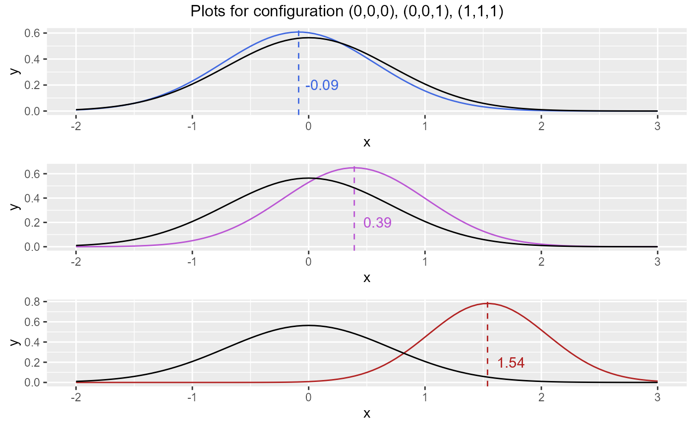
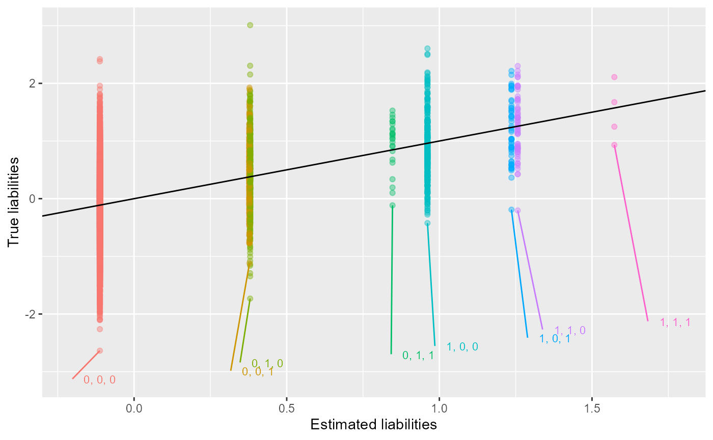
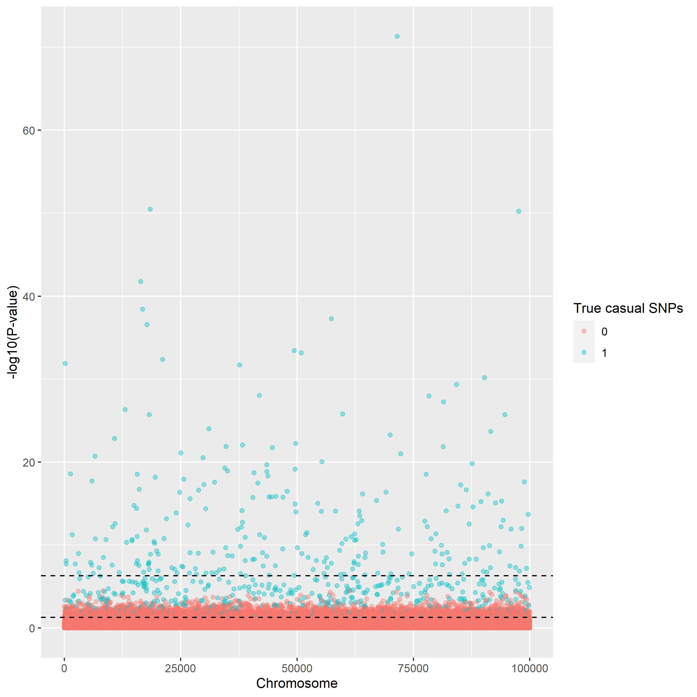
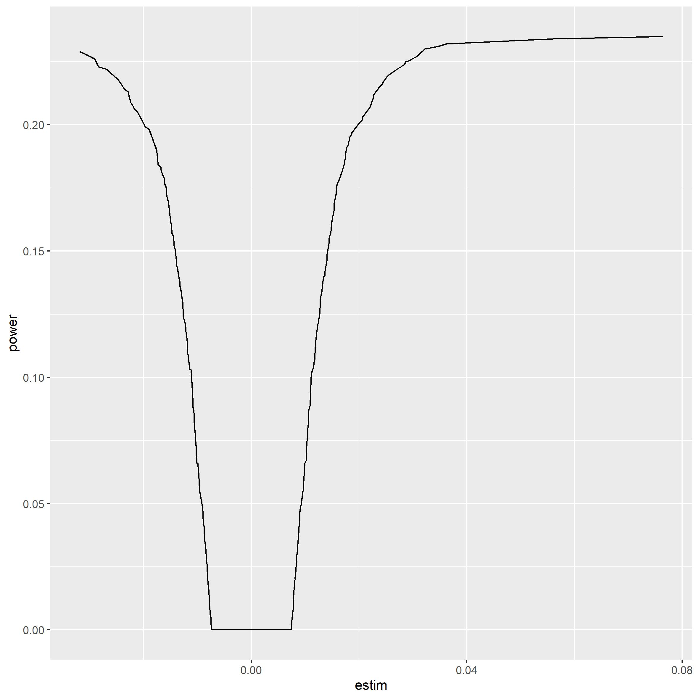

LT-FH
LT-FH.RmdWe use the following packages in this vignette.
A more sophisticated method of analyzing the genetic data and finding the causal SNPs is using LT-FH (liability threshold family history). This method use a Gibbs sampler in order to estimate the genetic liability of each subject based on the family history, i.e. if the subject, it’s parent or siblings have the given trait or sickness. Using this estimate an updated expected value for the genetic liability can be obtained.
LTFH is based on a sampling using Monte Carlo integration. More
information about the process can be found here
vignette("Gibbs-sampler"). Below is shown three plots with
the estimated posterior mean genetic liabilities compared to the
standard normal distribution of the genetic liability. The plots shows
the outcome of running the Gibbs sampler for the configurations (0,0,0),
(0,0,1) and (1,1,1) respectively.
gridExtra::grid.arrange(control_plot(phenos = c(0,0,0), h2 = 0.5, col = "royalblue"),
control_plot(phenos = c(0,0,1), h2 = 0.5, col = "mediumorchid"),
control_plot(phenos = c(1,1,1), h2 = 0.5, col = "firebrick"),
top = c("Plots for configuration (0,0,0), (0,0,1), (1,1,1)"),
ncol = 1)
Using the estimates of genetic liabilities instead of the phenotypes as target vector can be very beneficial. We are going to run through an example of this in the next section.
Using LTFH
In the following tutorial a file is used which have been generated
using the method described in vignette("Simulation"). First
we load the data. We have here simulated \(1e^4\times1e^4\) data points using two
siblings. In the following 100 SNPs has a casual effect. This data is
only used to show case the method and illustrate how the package can be
used. If the methods should be used to actual statistical analysis we
recommend simulating \(1e^5\times1e^5\)
data points with about 500-1000 casual SNPs. For practical reasons we
have not been apple to show case the analysis. We have included pictures
to illustrate the results on \(1e^5\times1e^5\) data.
# The rds file containing simulated data is loaded
genetic_data = snp_attach('genetic_data.rds')
# We save the genotypes and beta for later use
G = genetic_data$genotypes
beta = genetic_data$map$betaWe now run LT-FH and as we can see we get the estimates for each subjects genetic liabilities as a new column.
LTFH_est = LTFH(data = genetic_data, n_sib = 2)
LTFH_est[1:10,] %>% select(contains(c("0", "pheno"))) %>%
knitr::kable(., digits = 2, align = "c")| l_f_0 | l_g_0 | pheno_0 | l_g_est_0 | pheno_p1 | pheno_p2 | pheno_s3 | pheno_s4 |
|---|---|---|---|---|---|---|---|
| -0.34 | -0.71 | 0 | -0.14 | 0 | 0 | 0 | 0 |
| 1.43 | 0.49 | 0 | 0.32 | 0 | 0 | 1 | 0 |
| -1.08 | -0.34 | 0 | -0.14 | 0 | 0 | 0 | 0 |
| 1.27 | 0.58 | 0 | -0.14 | 0 | 0 | 0 | 0 |
| 0.31 | 1.01 | 0 | 0.34 | 1 | 0 | 0 | 0 |
| -0.51 | 0.13 | 0 | -0.14 | 0 | 0 | 0 | 0 |
| 0.32 | 0.10 | 0 | -0.14 | 0 | 0 | 0 | 0 |
| 0.58 | 0.77 | 0 | 0.85 | 1 | 0 | 1 | 1 |
| 0.23 | -0.26 | 0 | -0.14 | 0 | 0 | 0 | 0 |
| -1.47 | -0.98 | 0 | -0.14 | 0 | 0 | 0 | 0 |
How the estimated expected genetic liability match the actual values of l_g_0 can be show by plotting estimated vs true. The plot below is done only with subject and parent to get a more clear plot.
genetic_data_nosib = genetic_data
genetic_data_nosib$fam <- genetic_data$fam %>% select(-contains(c("s4", "s3")))
LTFH_est0 = LTFH(data = genetic_data_nosib, n_sib = 0)
LTFH_plot(LTFH_est0)
This looks great! It seems that the y=x line runs through the mean of each configuration.
The estimated genetic liabilities can now be used as wanted. We are
here using them as the target vector in a linear regression in order to
estimate the causal effect of each SNP see
vignette("GWAS").
LTFH_summary = GWAS(G = G, y = LTFH_est$l_g_0, p = 5e-6, logreg = FALSE, ncores = 3)
knitr::kable(LTFH_summary[1:10,], digite = 2, align = "c")| estim | std.err | score | p_vals | causal_estimate |
|---|---|---|---|---|
| 0.0020072 | 0.0138355 | 0.1450753 | 0.8846544 | 0 |
| -0.0106287 | 0.0110051 | -0.9657913 | 0.3341720 | 0 |
| 0.0033297 | 0.0233745 | 0.1424482 | 0.8867289 | 0 |
| -0.0417672 | 0.0126710 | -3.2962767 | 0.0009832 | 0 |
| 0.0100190 | 0.0109349 | 0.9162381 | 0.3595641 | 0 |
| -0.0264686 | 0.0277229 | -0.9547587 | 0.3397228 | 0 |
| -0.0031987 | 0.0110099 | -0.2905253 | 0.7714204 | 0 |
| -0.0019586 | 0.0137008 | -0.1429572 | 0.8863268 | 0 |
| 0.0143384 | 0.0109367 | 1.3110289 | 0.1898781 | 0 |
| -0.0118281 | 0.0128857 | -0.9179204 | 0.3586827 | 0 |
In the above table we see the result of the association analysis, where we can see which SNPs is estimated as casual. We are using Bonferroni correction to lower the amount of false positive causal SNP. And since we have \(10^4\) individuals we will use \(p==5e\cdot 10^{-6}\).
Outcome for realistic data
We will below give the results of the association analysis on a data set with \(10^5\times10^5\) data points. The process of getting these result is the same as shown above we have here used a p-value with Bonferroni correction \(p=5\cdot 10^{-7}\). The first plot shown below is a Manhattan plot. The plot illustrates how well the analysis is to differentiate between casual and non causal SNP. Two horisontal lines have been drawn illustrating the thresholds for the p-value. We can see that choosing to use the conservative method of Bonferroni correction we describe the data better. Comparing this to the result of GWAS without using estimated liabilities we see that LTFH clearly performs better.
manhattan_plot(gwas_summary = LTFH_summary, beta = beta, thresholds = c(5e-7, 0.05))
This can also be illustrated using scatter plot. Here we see that we
are very good at finding estimates of very extreme effects, though it is
much more difficult to for the association analysis around the middle.
Again this method very much outperforms normal
vignette("GWAS").
scatter_plot(gwas_summary = LTFH_summary, beta = beta)
At last we include a power plot to show case why we are not able to estimate the smaller causal effects. We simply do not have the power in our test to do so!
power_plot(gwas_summary = LTFH_summary, beta = beta)
Note on LT-FH on real world data
This performance improvement is, with the simulated data, expected since we know for a fact that the right assumptions about the data is made. If real world data is used it is no more a certainty that the assumptions will hold and we would expect LTFH to perform worse than what is shown here, therefore it could be relevant to update the covariance matrix to suit real world data beta. E. g. by adding some kind of correlation between parent’s and child’s environmental liability. In spite of this Hujoel et al.(2020) show that LTFH outperforms the standard GWAS with real world data as well.